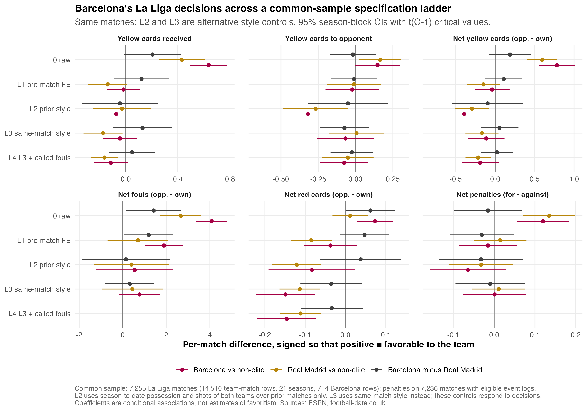
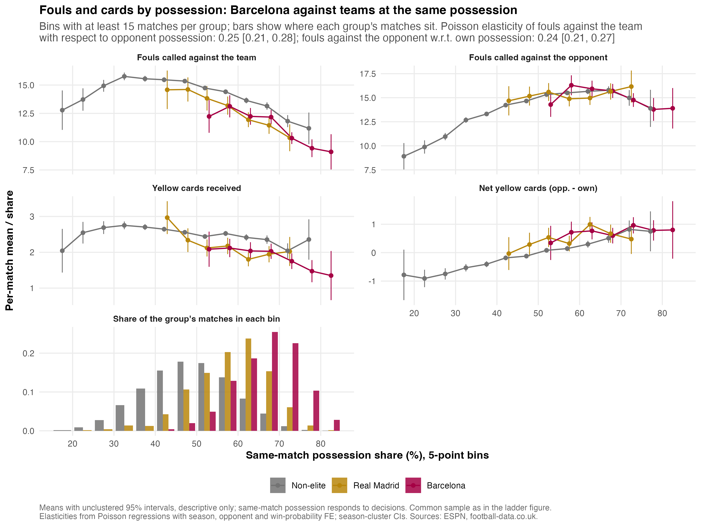
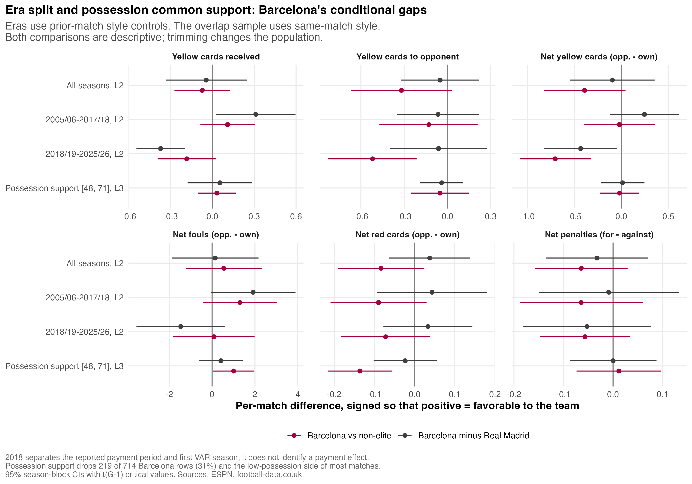
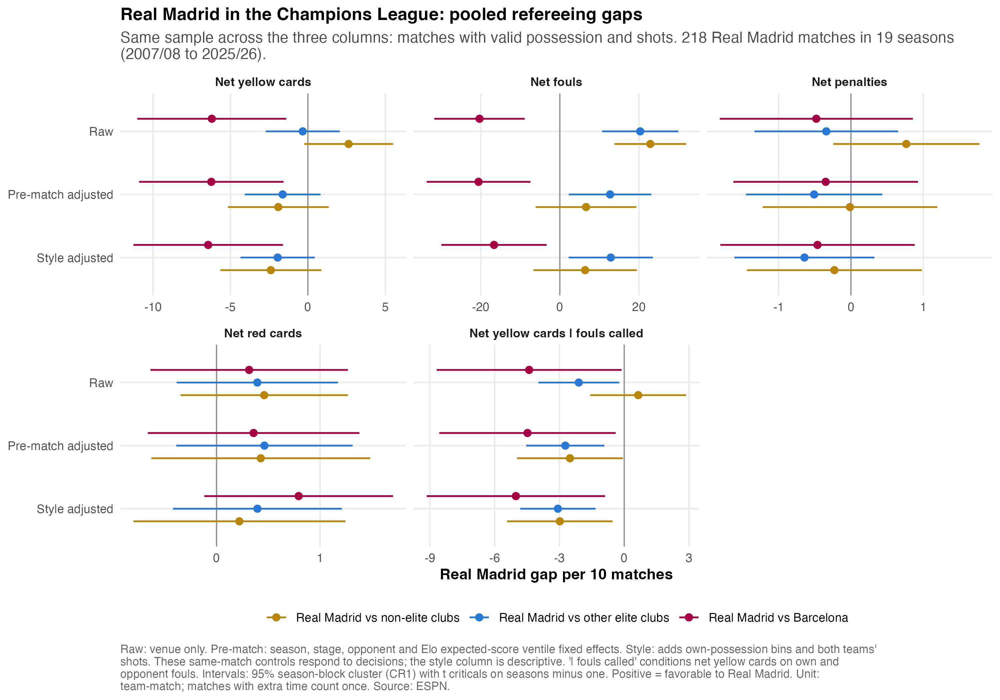
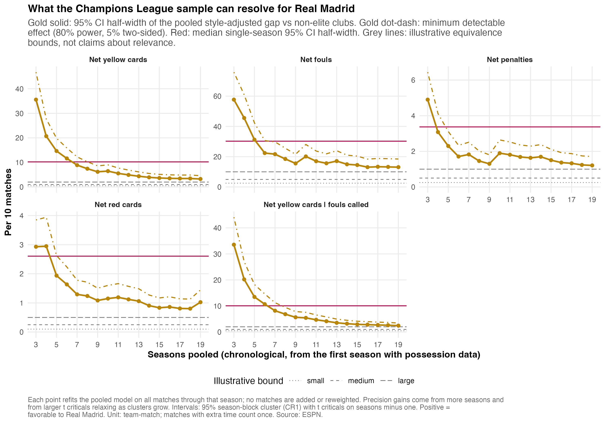
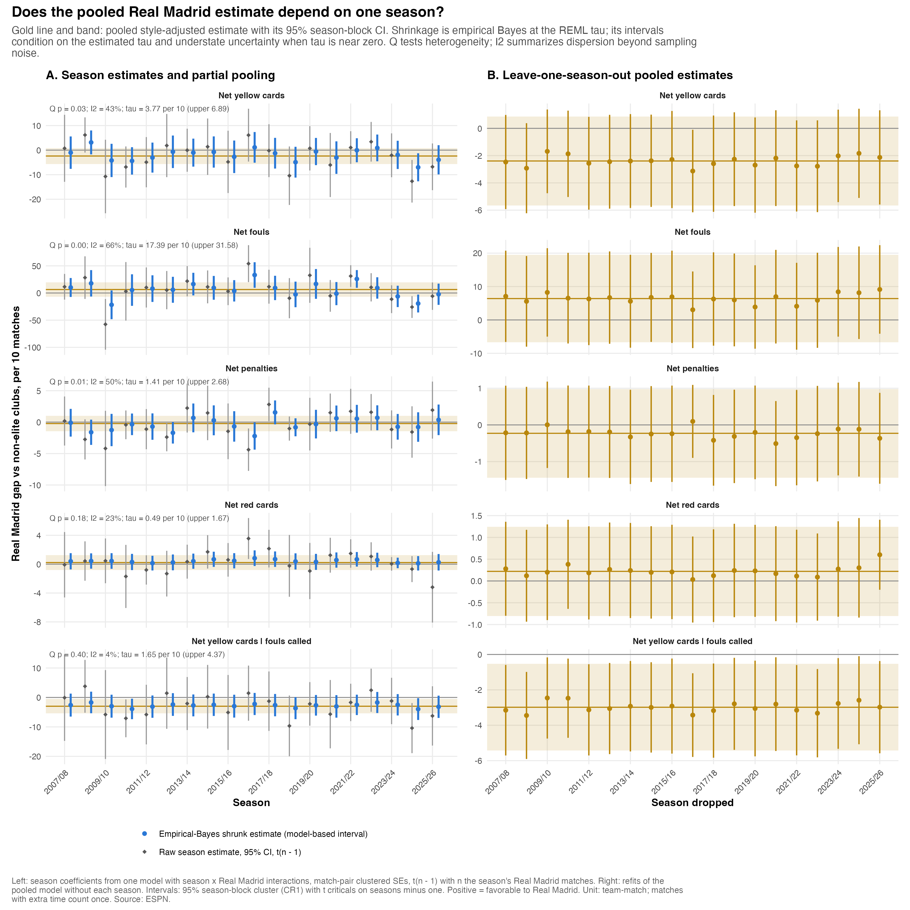
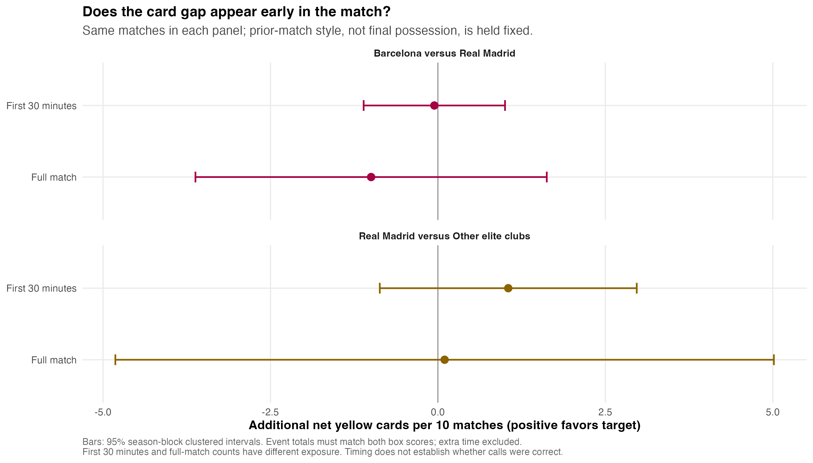

Possession is a proxy for opportunities, not a count of comparable tackles or penalty-area incidents. Fouls can occur off the ball. Yellow cards include dissent and time-wasting, so cards divided by fouls are not a binomial probability. Called fouls, final possession and shots can themselves respond to earlier decisions. The cached data lack foul severity, uncalled incidents, complete box touches and independently judged decision correctness. They also lack sufficiently complete referee identities for a modern referee-fixed-effect design. A residual gap cannot establish favoritism or rule out bias in a small number of decisive incidents.
Tables use effects per 10 matches; figures label their own units. Positive means more favorable to the target club. Main comparison intervals are pointwise 95% season-block clustered intervals with small-sample t critical values. The two team rows from a match are not treated as independent games. Season blocks allow arbitrary dependence within a season but assume independence across seasons. Models compare recorded decisions, not correct and incorrect calls.
Each cell is a gap per 10 matches followed by its 95% interval. The ladder holds the sample fixed within each outcome; penalties have their own event-log sample.
| Outcome | Raw | Prior style | Same match style | Given called fouls |
|---|---|---|---|---|
| Fewer yellow cards received | 2.06 [-0.15, 4.26] | -0.44 [-3.36, 2.47] | 1.29 [-0.96, 3.55] | 0.49 [-1.29, 2.27] |
| More opponent yellow cards | -0.18 [-1.75, 1.39] | -0.51 [-3.21, 2.19] | -0.75 [-2.37, 0.88] | -0.25 [-1.67, 1.17] |
| Net yellow cards | 1.88 [-0.74, 4.50] | -0.96 [-5.44, 3.53] | 0.55 [-1.85, 2.94] | 0.24 [-1.80, 2.28] |
| Net fouls | 14.19 [1.60, 26.79] | 1.46 [-18.74, 21.66] | 3.26 [-7.98, 14.50] | Not applicable |
| Net red cards | 0.62 [0.00, 1.23] | 0.38 [-0.63, 1.38] | -0.36 [-1.12, 0.41] | -0.34 [-1.11, 0.43] |
| Net penalties | -0.15 [-0.98, 0.68] | -0.32 [-1.36, 0.71] | -0.10 [-0.95, 0.75] | Not applicable |
Barcelona's prior-match possession lies above the non-elite 95th percentile in 99.9% of its eligible matches. Only 1.3% lies inside Real Madrid's central 90% range. The lagged-style models therefore depend on extrapolation, especially against non-elite clubs. L3 therefore uses same-match style instead of lagged style. It has more support but conditions on variables refereeing can change.
| Outcome | Raw | Prior style | Same match style | Given called fouls |
|---|---|---|---|---|
| Fewer yellow cards received | 6.35 [4.92, 7.79] | -0.73 [-2.72, 1.27] | -0.44 [-1.73, 0.84] | -1.15 [-2.45, 0.16] |
| More opponent yellow cards | 1.48 [-0.03, 2.98] | -3.19 [-6.68, 0.30] | -0.68 [-2.57, 1.21] | -0.76 [-2.36, 0.84] |
| Net yellow cards | 7.83 [5.52, 10.15] | -3.92 [-8.27, 0.44] | -1.12 [-3.43, 1.19] | -1.91 [-4.25, 0.43] |
| Net fouls | 40.83 [33.66, 47.99] | 5.46 [-12.22, 23.14] | 7.68 [-1.84, 17.20] | Not applicable |
| Net red cards | 0.73 [0.28, 1.18] | -0.84 [-1.91, 0.24] | -1.49 [-2.22, -0.75] | -1.46 [-2.19, -0.72] |
| Net penalties | 1.20 [0.56, 1.84] | -0.64 [-1.58, 0.29] | 0.01 [-0.76, 0.78] | Not applicable |
Fouls committed have estimated possession elasticity 0.25, 95% CI [0.21, 0.28], with p < 0.001 against proportionality of one. Fouls suffered have estimated possession elasticity 0.24, 95% CI [0.21, 0.27], with p < 0.001 against proportionality of one. Do not assume fouls are proportional to possession.



Prior-style-adjusted net yellows. This is a descriptive era split, not a treatment-effect design.
| Comparison | Gap and 95CI | p value |
|---|---|---|
| Barcelona minus Real Madrid, 2005/06-2017/18 | 2.46 [-1.19, 6.10] | 0.176 |
| Barcelona minus Real Madrid, 2018/19-2025/26 | -4.33 [-8.22, -0.44] | 0.031 |
| Change in (Barcelona minus Real Madrid) after 2018 | -6.79 [-10.45, -3.13] | 0.001 |
Style-adjusted comparisons against the other elite clubs, excluding Barcelona. Baseline_per10 is the non-elite own-side count, provided as a scale benchmark, not the comparator mean.
| Outcome | Gap and 95CI | MDE 80pct | Madrid matches | Seasons | Baseline per10 |
|---|---|---|---|---|---|
| Net yellow cards | -1.95 [-4.35, 0.45] | 3.38 | 218 | 19 | 19.77 |
| Net fouls | 12.89 [2.25, 23.54] | 15.01 | 218 | 19 | 132.19 |
| Net penalties | -0.64 [-1.61, 0.33] | 1.37 | 218 | 19 | 1.37 |
| Net red cards | 0.40 [-0.42, 1.21] | 1.15 | 218 | 19 | 0.97 |
| Net yellow cards, given called fouls | -3.07 [-4.82, -1.33] | 2.46 | 218 | 19 | 19.77 |
Pooling all eligible seasons estimates a persistent average gap rather than a different effect in every small season. It adds information without inventing matches or treating domestic and UEFA officials as interchangeable. The MDE is calibrated under a noncentral-t approximation at 80% power and 5% two-sided size, using the estimated clustered SE. Equivalence results use explicit illustrative bounds and 90% intervals; failure to reject zero is not equivalence. Seasonal empirical-Bayes estimates retain the full covariance of jointly estimated season coefficients. Their intervals condition on estimated between-season heterogeneity and can understate uncertainty. Unpooled estimates, heterogeneity sensitivity, and leave-one-season-out fits remain available. Shrinkage intervals are not the headline evidence.



These first-30-minute and whole-match estimates use the same matches within each comparison. Both teams' card totals must reconcile to the box score. Exposure differs between the two windows, so this is a timing diagnostic, not a rate comparison.
| Comparison | Period | Gap and 95CI | Target matches | Seasons |
|---|---|---|---|---|
| Barcelona vs Real Madrid | First 30 minutes | -0.05 [-1.11, 1.00] | 375 | 15 |
| Barcelona vs Real Madrid | Full match | -1.00 [-3.62, 1.63] | 375 | 15 |
| Real Madrid vs Other elite clubs | First 30 minutes | 1.05 [-0.87, 2.97] | 80 | 15 |
| Real Madrid vs Other elite clubs | Full match | 0.10 [-4.82, 5.02] | 80 | 15 |

The CSV below reports Holm-adjusted p-values across the 11 headline endpoints. Other specifications, eras and seasons are sensitivity analyses, not separate discoveries.
| target | outcome | p value | Holm p |
|---|---|---|---|
| Barcelona | own_yellow | 0.246 | 1.000 |
| Barcelona | opp_yellow | 0.352 | 1.000 |
| Barcelona | net_yellow | 0.638 | 1.000 |
| Barcelona | net_fouls | 0.552 | 1.000 |
| Barcelona | net_red | 0.344 | 1.000 |
| Barcelona | net_pens | 0.813 | 1.000 |
| Real Madrid | net_yellow | 0.105 | 0.941 |
| Real Madrid | net_fouls | 0.020 | 0.203 |
| Real Madrid | net_pens | 0.180 | 1.000 |
| Real Madrid | net_red | 0.322 | 1.000 |
| Real Madrid | net_yellow_fouls | 0.002 | 0.018 |
The rebuilt sample contains 48,346 completed matches across the six competitions through 2025/26. 43 recorded possession pairs were invalid and were masked, not rescaled. 3,230 penalty-eligible matches would have been lost to the old low-penalty-rate rule. Finished seasons are not necessarily complete source coverage; data-audit-coverage.csv reports missing fixtures. 23 matches have conflicting ESPN and football-data scores, listed in data-audit-score-disagreements.csv. No source is declared correct by this audit. The internal Elo still uses ESPN results, so score errors can affect that strength control.
The earlier draft's causal language is not supported by this audit. Club ranks are descriptive, not permutation tests, because club labels are not exchangeable. The 2018 split is descriptive, not an identified effect of the reported payments. The stoppage variable measures the final-whistle clock rather than the announced minimum, and injury, substitution and time-wasting exposure is incomplete. I do not treat the earlier stoppage association as the clearest evidence of favoritism.
Penalty eligibility now requires a regulation-end marker and goals that reconcile through extra time. That does not prove all missed penalties or penalty labels are recorded. Abandoned matches are excluded; regulation scores no longer subtract goals from a final score that includes extra time.
Definitions: IFAB Law 12; IFAB Law 7.
Headline estimates CSV | Coverage audit CSV | Artifact hashes